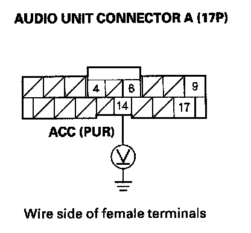

Power Will Not Turn OFF
Power will not turn OFF1. With the ignition switch ON (II), push the power switch OFF or turn the ignition switch OFF to see if the audio unit turns OFF.
Does the audio unit turn OFF?
YES - Operation is normal.
NO - Go to step 2.
2. Turn the ignition switch OFF.
3. Remove the audio unit. Disconnect the audio unit connector A (17P).

4. Measure the voltage between the No. 14 terminal of audio unit connector A (17P) and body ground.
Is there voltage?
YES - Check for short to power on the PUR wire.
NO - Audio unit is faulty, replace the audio unit.